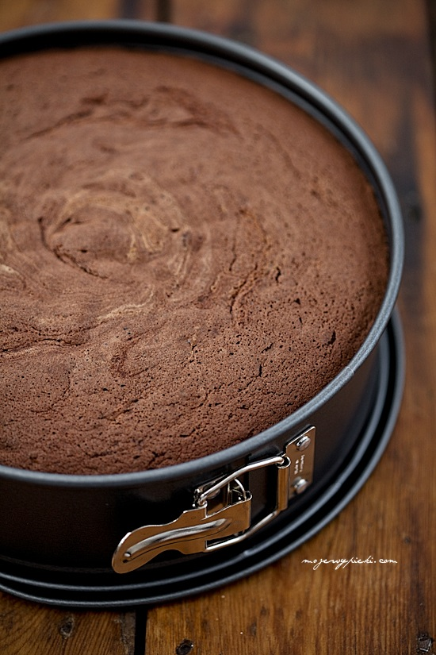

Biszkopt genueński czekoladowy

Składniki:
-6 dużych jajek (bez rozdzielania na białka i żółtka)
-150 g drobnego cukru do wypieków
-1 łyżeczka ekstraktu z wanilii
-120 g mąki pszennej
-50 g kakao
-40 g masła
Wszystkie składniki powinny być w temperaturze pokojowej. Jajka (w całości, w skorupkach) pół godziny wcześniej włożyć do bardzo ciepłej (nie wrzącej) wody by się ogrzały; wystudzoną wodę w razie konieczności wymieniać. Mąkę i kakao przesiać, odłożyć.
Masło roztopić, wystudzić do temperatury pokojowej.
Formę tortownicę o średnicy 23 – 24 cm wysmarować masłem (samo dno) i wyłożyć papierem do pieczenia.
Do misy miksera wbić ogrzane jajka, wsypać cukier i wanilię. Ubijać (końcówkami miksera do ubijania piany z białek) na najwyższych obrotach miksera do momentu uzyskania jasnej, puszystej masy, która nawet potroi swoją objętość. Mikserem planetarnym masa jajeczna powinna być ubijana od 7 – 10 minut, mikserem ręcznym od 10 – 15 minut. Masa jajeczna podnoszona na mieszadle miksera powinna opadać lekko w postaci wstążki na resztę ciasta i pozostawać na jej powierzchni przez kilka dobrych sekund.
Do masy jajecznej przesiać mąkę i kakao, w trzech turach, mieszając delikatnie rózgą kuchenną do połączenia. Podczas ostatniego mieszania dodać wystudzone masło (wymieszane wcześniej z 1 łyżką masy jajecznej), delikatnie wymieszać.
/Uwaga: mieszamy bardzo delikatnie! Biszkopt rośnie tylko dzięki ubitym jajkom, jeśli zniszczymy wprowadzone do masy jajecznej podczas ubijania pęcherzyki powietrza – ciasto nie wyrośnie./
Masę przelać do tortownicy i wyrównać szpatułką.
Piec w temperaturze 175ºC przez około 35 – 40 minut lub do tzw, suchego patyczka. Po upieczeniu biszkopt w formie wyjąć natychmiast z piekarnika i z 30 – 40 cm opuścić go na podłogę (w formie). Dzięki temu biszkopt nie opadnie, pozostanie płaski.
Po wystudzeniu przejechać ostrym nożem z piłką pomiędzy biszkoptem i formą, uwolnić go z formy. Przekroić na 3 części/blaty.
Powrót do przepisów